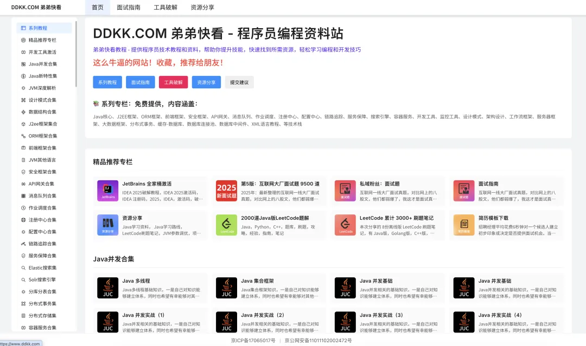
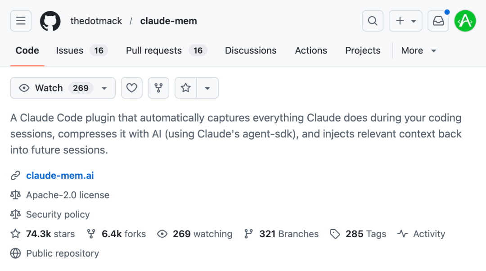
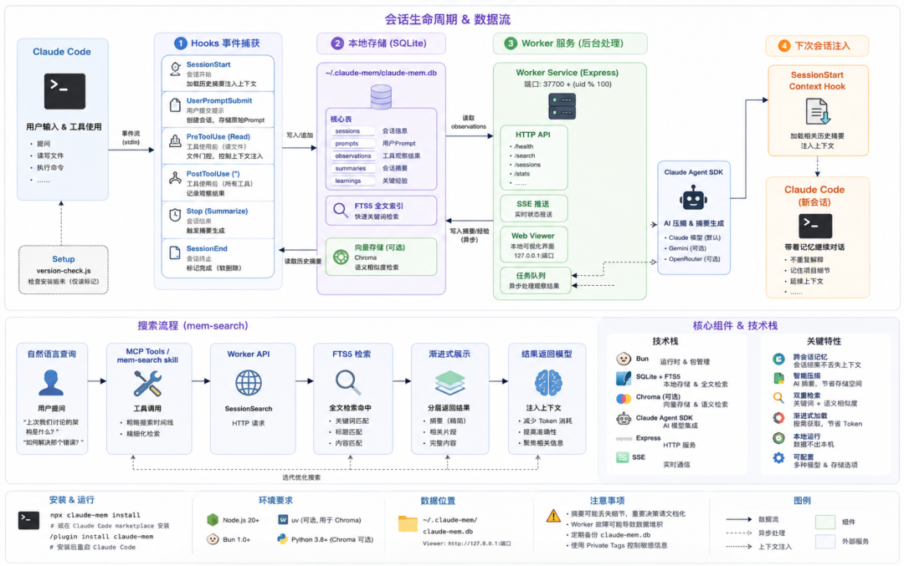
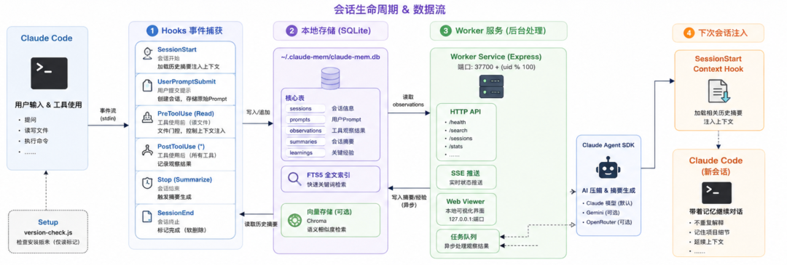
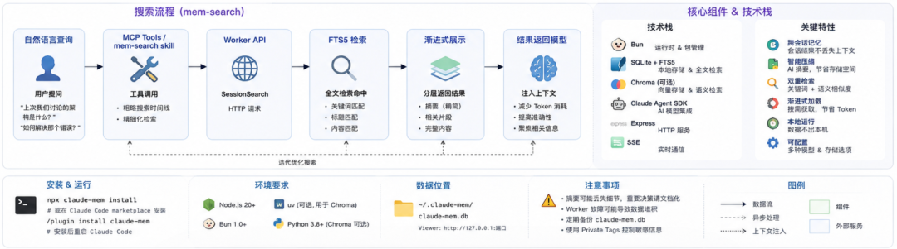

claude-mem：Claude Code 跨会话记忆持久化——Hook 管道 + SQLite 本地库 + Worker 后台压缩
来源：微信公众号 归档日期：2026-05-11 抓取状态：成功 原文字符：3217｜配图：5 张
摘要速览
Claude Code 会话关闭后上下文全部丢失，下次打开等于失忆重来。claude-mem 通过 Hook 机制把每次会话的关键观测持久化到本地 SQLite，后台 Worker 压缩后下次会话再注入，实现跨会话记忆续接。
核心内容
一、整体架构：五步管道
Hook 捕获 → 本地存储 → 后台压缩 → 下次会话注入 → 智能检索- 不是"永久记忆"玄学，而是 Claude Code Hook 上接的一根下水管
- 脏数据先冲进本地 SQLite，Worker 用 Agent SDK 把 observation 压缩成下次可喂的小抄
- 核心文件：
bun-runner.js拉起worker-service.cjs，避免孤儿进程
二、Hook 挂载细节
| Hook 时机 | 干什么 |
|---|---|
| SessionStart | 起 Worker，往当前会话嘴里塞以前的摘要 |
| UserPromptSubmit | 开 session，把原始 prompt 扔库里供全文检索 |
| PreToolUse（文件读） | 卡一道文件门，按需加载，省 token |
| PostToolUse | 记录所有工具调用结果 |
| Stop | summarize 本次会话 |
version-check.js启动时校验.install-version，不一致就 stderr 报错提示npx claude-mem repair
三、存储双路：SQLite + Chroma
- 本地库：
~/.claude-mem/claude-mem.db，用bun:sqlite+ FTS5 虚拟表做关键词搜索 - 向量库（可选）：挂 Chroma，做语义相似度检索（"这句像不像上次那句"）
- Worker 暴露 HTTP（默认端口
37700 + uid % 100），提供：搜索接口 / 本地 Viewer 页 / SSE 推流 / Agent SDK 压缩 - 大白话：SQLite 管搜得着搜不着，Chroma 管像不像，都不开就闭眼聊
四、mem-search（v5.4+）
- 粗搜时间线再抠细节，不是把整库糊脸上
- 分层检索 token 消耗更低，官方说能省"一截"
五、安装方式
npx claude-mem install
# 或 Claude Code marketplace：thedotmack/claude-mem → /plugin install claude-mem- 要求：Node 20+，Bun 1.0+，Chroma 路线还需 uv Python
- 装完必须重启 Claude Code，否则 Hook 不生效
六、风险与局限
- 记多了本地变黑匣子，Private Tags 要自己配排除规则
- 摘要有损，重要决策该写文档，别依赖插件
- Worker 翻车时 observation 堆半截，文档有 recovery 方案；需当服务维护，不是吉祥物
可执行启发
（待补充）
我的想法
（待补充）
为什么有用
目前针对 Claude Code 跨会话记忆场景最完整的开源方案之一（74K+ star），Hook 挂载点覆盖完整会话生命周期，SQLite 本地存储无隐私泄露风险，Worker 架构避免孤儿进程，技术实现相对可靠。弥补 Claude Code 自身会话隔离缺陷的工程解法。
适用 / 不适用场景
- 适用：长期项目跨会话记忆、减少重复交代背景、Claude Code 个人知识库搭建
- 不适用：团队共享记忆（Viewer 只在本机）、极度敏感信息（本地黑匣子问题）、要求 100% 召回的关键决策记录
原文沉淀
目录
大家好，我是鹏磊。

鹏磊我闲得没事刷 GitHub，又瞅见 claude-mem 在那杵着，Star 74.3k多晃荡，具体几位数你爱看不看 claude-mem，反正好孬都是虚胖，过两天又变
我为啥啃这玩意儿，纯纯是自己也被 Claude Code 恶心过：窗口一关，脑子当场断片，上一把到底刚聊到哪个坑，谁记得住啊

它不是啥玄学「永久记忆」，说白了就是在 Claude Code 的 Hook 上头接了一根下水管，脏水先冲进本地 SQLite，后台再起个 Worker，拿 Agent SDK 那套把 observation 搓吧搓吧变成能喂回模型的小抄，下回张嘴不那么像失忆
细节我照
https://docs.claude-mem.ai/architecture/overview
扒的，有错你喷文档别喷我
通过Hook捕获> 本地存储> 后台压缩> 下次会话注入> 智能检索

断片这毛病，模型不背锅
官方那串 Persistent memory compression 你当洋屁听也行
人话就一句：会话死了，活别跟着一起埋；它记的是你工具咋用的、读了谁写了谁，不是给你算卦
钩子那点脏活，别整太文艺
别天天「记忆记忆」的，烦
先看它咋挂进去的
Setup 有个 version-check.js，快得很，瞟一眼 .install-version，不对就 stderr 嚎一嗓让你 npx claude-mem repair，自个不瞎装机，这路子我瞅着像老油条干的事
如果你近期准备面试跳槽，建议在ddkk.com在线刷题，涵盖 一万+ 道 Java 面试题，几乎覆盖了所有主流技术面试题，还有市面上最全的技术五百套，精品系列教程，免费提供。
后面一串才是正经：啥 SessionStart 起 Worker 往你嘴里塞以前的摘要；UserPromptSubmit 开 session 把你原话 prompt 扔库里给全文检索当饲料；Read 前头还有 PreToolUse 卡一道文件门，文档吹得花花，本质就是想省 token；PostToolUse 跟狗皮膏药似的啥工具都贴；Stop 了 summarize；完事标记完成不搞硬删，/clear 有时还躲一手
到头来全是 bun-runner.js 拽着 worker-service.cjs 跑，名字土是土，起码没给你一地孤儿进程，我瞅着这算积德
画个序，图里我直接用文档那套英文事件名，省得你对着官方架构翻字典

本地库跟后台，两条腿走路
Worker 就 Express 顶着 HTTP，端口默认 37700 + (uid % 100)，想改自己掏 CLAUDE_MEM_WORKER_PORT，别跟我哭端口占用
它干啥：搜；给人看的网页；SSE 嘀嘀咕咕推流；顺手把 observation 丢给 Agent SDK 压（文档说也能换 Gemini OpenRouter 那条便宜路）
库躺 ~/.claude-mem/claude-mem.db，bun:sqlite 扛着，搜关键词靠 FTS5 那块虚拟表；要想「这句像不像上次那句」再挂 Chroma，爱挂不挂
要我说大白话：SQLite 管你搜得着搜不着；Chroma 管你像不像；你俩都懒得开就闭着眼硬聊
下面两张跟 docs 里的 Memory / Search pipeline 对齐，节点全英文，GitHub 上瞟一眼能对上号就成

白话还是那句：hook 写库、worker 读 observation、SDK 压完回写、下轮再灌；搜是 query 走 MCP/skill、HTTP 打 SessionSearch、FTS5 命中、分层展开再回去——图就是字少版
mem-search 那档子事文档吹 v5.4+，粗搜时间线再抠细节，跟一开头把整库糊脸上完全两码事；他们说 token 能省一截，具体几位你自己翻 Release，我不在这跟写财报似的编数
咋装上 别跟我杠
npx claude-mem install或者在 Claude Code 里 marketplace 加 thedotmack/claude-mem 再 /plugin install claude-mem
装完重启，不重启别嚷嚷「没记忆」
Node 20+ Bun 1.0 往上，Chroma 那条路还可能拽 uv Python，公司网死难用的自个心里有数
Viewer 就本机 127.0.0.1 那块自嗨屏，别当成云上产品
吹得再硬也有代价
记多了本地就是一黑匣子，Private Tags 不想记啥自己卡，别指望插件替你守法
摘要摘要，摘就有丢，架构拍板线上扯皮那种大事该写文档写文档，别整得跟「我脑子在插件里」一样神经病
Worker 翻车了 observation 堆半截，人家文档都写了咋 recovery，说明这路本来就会断，你要当基础设施伺候它就当个小服务运维，别当吉祥物供着
https://www.ddkk.com
如果你近期准备面试跳槽，建议在ddkk.com在线刷题，涵盖 一万+ 道 Java 面试题，几乎覆盖了所有主流技术面试题，还有市面上最全的技术五百套，精品系列教程，免费提供。
归属：[[02-输入/按主题/工具与技术/_index|工具与技术]]